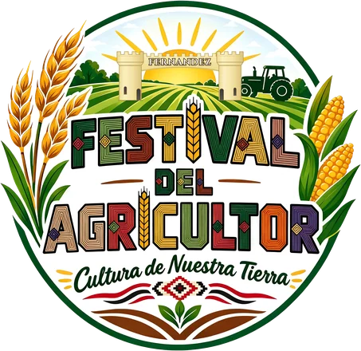
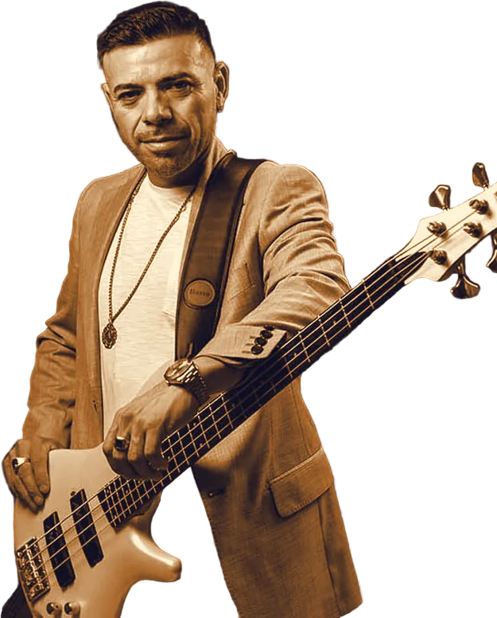
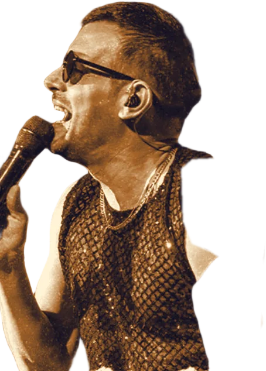
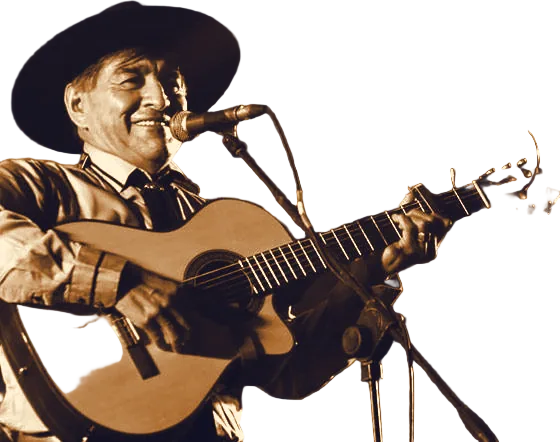
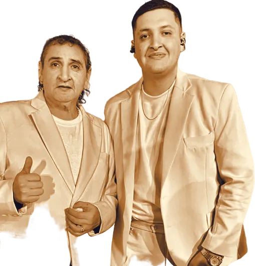
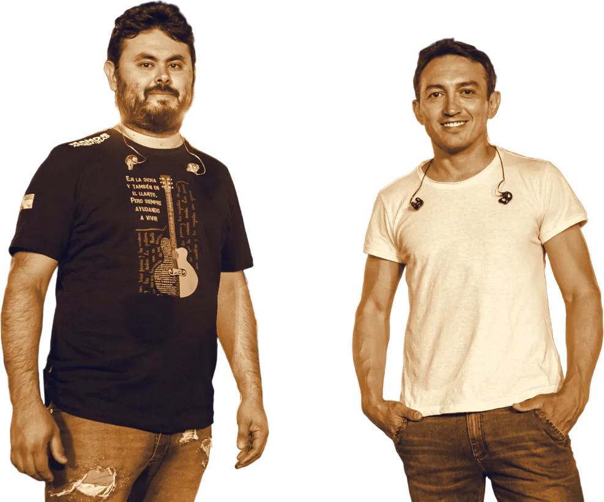
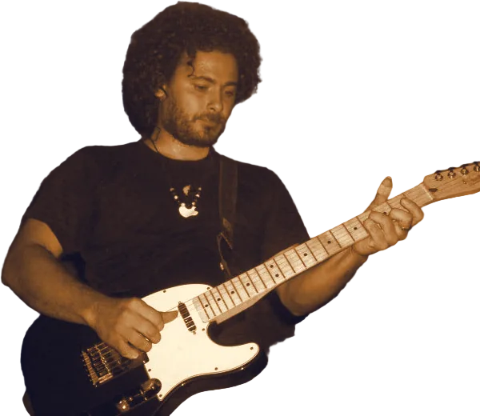
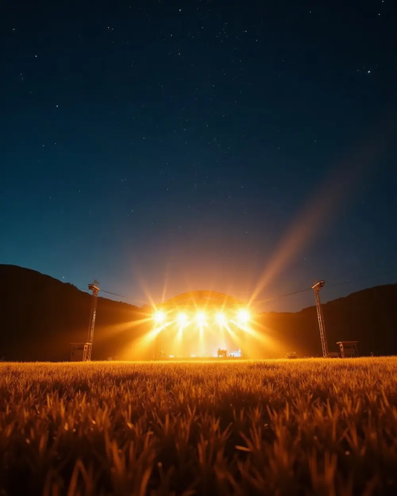

Santiago del Estero
1er Festival del Agricultor · Fernández






Raly Barrionuevo✦
Marcelo Toledo✦
Alejandro Véliz✦
Los Bonys✦
Ricardo Sosa y La Ranchada✦
DJ Leo Lencina✦
Sábado 9 y domingo 10 de enero 2027
Club Independiente · Fernández
Faltan—noches
Produce
Lote 01Primeros confirmados
La cartelera
Lote 02De acá, de nuestra tierra
Artistas locales
Las voces, los bombos y los chamameces de Fernández también suben al escenario del festival.
Lote 03Venta online · muy pronto
Tu entrada
La venta abre en los próximos días, acá mismo y desde el celular. Elegís la noche o el abono, pagás online y el QR te llega al correo al instante.
Los precios online llevan un costo de servicio. Menores: se informa con la apertura de la venta.
Elegís
La noche del sábado, la del domingo o el abono para las dos.
Pagás online
Sin efectivo y desde tu casa.
CréditoDébitoTransferenciaMercado PagoMODOTe llega el QR
Al correo, en el momento. En la puerta lo mostrás desde el celular: no hace falta imprimirlo.

Lote 04Vuelve el gran festival
Fernández vuelve a tener su gran festival
Después de más de 20 años, Fernández vuelve a tener un gran festival. La Capital del Agro de Santiago del Estero abre la cancha del Club Independiente para dos noches de música, con artistas de primera línea y los de acá.
No es una fiesta solo para Fernández: es un acontecimiento para todas las localidades vecinas, para La Banda y para Santiago capital. Familias, amigos y gente de toda la región vuelven a encontrarse frente a un escenario.
Y es también un empuje para la ciudad: durante las dos noches trabajan los comercios, los puestos de comida, los artesanos y los productores de la zona. Un festival que celebra a la gente que trabaja la tierra, organizado por gente de Fernández.
Lote 05Además del escenario
Feria y patio de comidas
Las dos noches, el predio se llena de puestos: para comer algo rico, recorrer entre show y show y llevarse algo hecho a mano.
Feria de artesanos
Artesanías de la región: tejidos, cuero, madera y lo que trae cada artesano.
Patio de comidas
Para comer y tomar algo sin salir del predio, mientras sigue la música.
Lo de Fernández
Las academias y los artistas de la ciudad también suben al escenario del festival.
¿Querés tu puesto?
Los lugares son limitados. Escribinos y te contamos los requisitos y los costos.
Lote 06Estadio Luis A. Galván
Cómo llegar
La cancha del Club Independiente, vista desde arriba.Imagen satelital: Esri / Maxar
Dónde
Club Independiente de FernándezEstadio Luis Adolfo Galván
Independencia y 20 de Junio · Fernández, Santiago del Estero
Lote 07Antes de venir